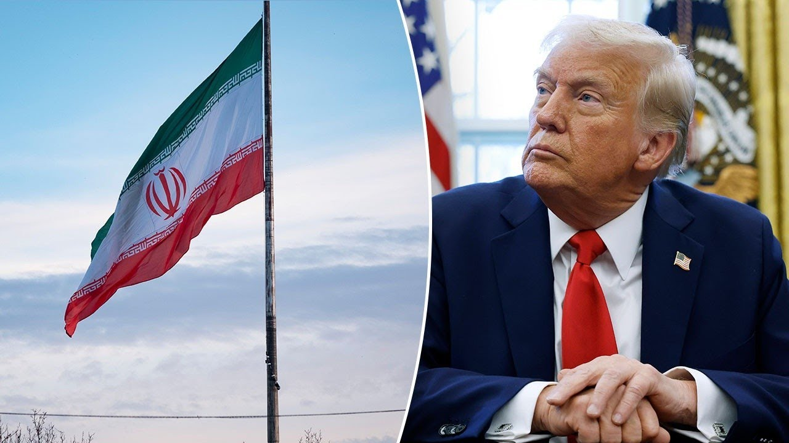

【伊朗对特朗普打击核设施进行回击：美国“炸毁”了外交】
Summary: Following U.S. President Trump’s missile strikes on Iranian nuclear facilities, Iran launched a major retaliatory attack by firing nearly 30 ballistic missiles at Israeli cities such as Tel Aviv and Haifa, injuring at least 80 civilians and destroying residential buildings. The strikes pushed millions of Israelis into bomb shelters, and both Israeli and American forces are on high alert for further Iranian retaliation. Israel’s Prime Minister praised Trump’s action as a historic step preventing Iran from acquiring nuclear weapons. Iran’s Foreign Minister accused the U.S. and Israel of sabotaging diplomatic efforts, claiming they were in negotiations before each side disrupted peace initiatives. Analysts warn that while Iran has limited direct strike capabilities, it may leverage proxy militias in the region to target American interests. Despite international concern, including cautious responses from Arab states and criticism from the UN, the Trump administration insists the door is open for negotiations, asserting strength as a deterrent to long-term conflict.
摘要： 在特朗普总统下令打击伊朗核设施后，伊朗强烈反击，向以色列特拉维夫、海法等城市发射近30枚弹道导弹，造成至少80名平民受伤，多栋住宅楼被毁，数百万人进入防空洞避难。美以两国军队目前处于高度戒备状态，防范伊朗进一步报复。以色列总理内塔尼亚胡称赞特朗普的行动阻止了伊朗获得核武器，是历史性的一步。伊朗外长则指责美以两国摧毁了外交努力，称他们原本在进行和平谈判。分析指出，伊朗虽能力有限，但可能通过在伊拉克、叙利亚的什叶派民兵等代理人，对美方目标发动袭击。尽管国际社会普遍担忧，中东多国立场谨慎，联合国秘书长甚至批评美国，特朗普政府仍坚称愿意谈判，并强调“以实力促和平”，意图通过迅速、果断的打击避免长期战争。

⏱️ Estimated Reading Time: 16 min
📚 六级生词 📚 雅思生词 📚 托福生词 📚 专八生词 📚 SAT生词 📚 考研生词 📚 GRE生词 📚 高考生词
Let's keep going here. Hours after the US strike, the Iranian regime resumed targeting the citizens in Israel.
让我们继续。在美国发动袭击几小时后，伊朗政权恢复针对以色列平民的攻击。
They're fighting a very different war.
他们正在打一场截然不同的战争。
They're not going after military targets or anything like they are shooting at people.
他们并未瞄准军事目标，而是直接袭击平民。
They are sending those missiles into major civilian areas.
他们将导弹射向主要居民区。
Some 27 overnight around Tel Aviv and Hifa.
当晚约有27枚导弹袭击特拉维夫和海法周边。
Israel's health ministry says at least 80 people were badly injured in some cases in those overnight strikes.
以色列卫生部表示，夜间袭击中至少有80人重伤。
Chief foreign correspondent Trey Yanks is in Tel Aviv.
首席外派记者特雷·扬克斯在特拉维夫。
Trey Harris, good morning.
特雷·哈里斯，早上好。
Hours after President Trump ordered those US strikes against Iranian nuclear facilities, the Iranians launched a large-scale ballistic missile attack against Israel, sending millions of people into bomb shelters.
特朗普总统下令打击伊朗核设施几小时后，伊朗对以色列发动大规模弹道导弹袭击，数百万人躲进防空洞。
Nearly 30 missiles soaring through the skies of this country.
近30枚导弹划过该国天空。
According to first responders, there were 10 different impact sites and more than 80 people wounded.
据急救人员称，有10个不同的爆炸点，80多人受伤。
A number of residential buildings were destroyed.
多栋住宅楼被毁。
First responders going to the scene, digging through the rubble, trying to find people who survived these blasts.
急救人员赶赴现场，在废墟中搜寻幸存者。
We do understand that the Israelis remain today on high alert, fearing more Iranian responses.
我们了解到，以色列仍处于高度戒备状态，担心伊朗进一步报复。
And there is a state of emergency here, warning civilians to stay out of public gatherings, schools are closed, and businesses shuttered.
当地进入紧急状态，警告民众避免聚集，学校停课，商铺关闭。
This is what Israel's Prime Minister Benjamin Netanyahu had to say in response to the American strikes.
以下是以色列总理本杰明·内塔尼亚胡对美国打击行动的回应。
History will record that President Trump acted to deny the world's most dangerous regime the world's most dangerous weapons.
历史将铭记，特朗普总统阻止了全球最危险政权获得最危险的武器。
His leadership today has created a pivot of history that can help lead the Middle East and beyond to a future of prosperity and peace.
他的领导力创造了历史转折点，或将推动中东乃至世界走向繁荣与和平。
The Iranians have responded saying all options are on the table about a possible response to the US strikes overnight and the country's foreign minister releasing a statement saying quote last week we were in negotiations with the US when Israel decided to blow up that diplomacy.
伊朗回应称“所有选项都在考虑中”，其外长声明称：“上周我们正与美国谈判，以色列却炸毁外交努力。
This week we held talks with the E3 EU when the US decided to blow up that diplomacy.
本周我们与欧盟三国会谈，美国又炸毁外交。
What conclusion would you draw?
你们能得出什么结论？”
Again, American forces and the Israelis remain on high alert across the region.
美以部队仍在该地区高度戒备。
There's real concern about a possible response that could come at any moment.
各方担忧伊朗随时可能报复。
And we do understand that both current and former Israeli officials continue to praise President Trump for this decision, understanding that it has changed the reality for the Middle East, going after these key nuclear sites in Iran and taking away that important piece of leverage that the regime had just 24 hours ago related to their nuclear program.
以色列现任及前任官员均赞扬特朗普的决定，认为此举改变了中东局势，摧毁伊朗关键核设施，剥夺其24小时前还拥有的核计划筹码。
Harris Trey, I I'm curious.
哈里斯·特雷，我很好奇。
You said through your reporting that all options are on the table for Iran.
你在报道中提到伊朗“所有选项都在桌上”。
I I'm What does that even mean at this point?
这到底意味着什么？
And are they hitting Israel in a way that that they anticipated?
他们袭击以色列的方式是否符合预期？
Is it bigger?
规模更大吗？
I know they're hitting civilians.
我知道他们在袭击平民。
Um and and that is horrible and they can continue to do that, but I had been reading maybe they wouldn't have as much in in terms of weaponry at this point.
这很可怕且可能持续，但有分析称伊朗当前武器储备有限。
Yeah, Harris, you're exactly right.
是的哈里斯，你说得对。
And I spoke on the phone earlier with Israel's former defense minister, Yo Galant, and he said it would be a grave mistake for the Iranians to respond to these strikes overnight that were ordered by President Trump.
我早些时候与以色列前国防部长约阿夫·加兰特通话，他表示伊朗若报复特朗普下令的夜间打击将犯下严重错误。
They do have some limited capability to continue targeting Israeli population centers with ballistic missiles.
伊朗确实具备有限能力继续用弹道导弹袭击以色列人口中心。
They could also use their proxies in the region, these Iranbacked Iraqi and Syrian Shia militias, to go after US bases or embassies in the Middle East.
他们还可动用地区代理人——伊朗支持的伊拉克和叙利亚什叶派民兵，袭击美军基地或中东使领馆。
But the key thing to remember here is that over the past year and a half, the Israelis have systematically taken out Iranian proxies like Hezbollah in southern Lebanon.
但关键在于，过去一年半以色列已系统性清除黎巴嫩南部真主党等伊朗代理人。
The Americans and the Israelis have gone after the Houthis in Yemen.
美以打击了也门胡塞武装。
They've targeted Hamas and Islamic Jihad inside Gaza.
他们瞄准加沙地带的哈马斯和伊斯兰圣战组织。
And it has given the Iranians very limited options in terms of a response.
这使伊朗的报复选项极为有限。
The situation has changed.
局势已变。
If we were having this conversation two years ago, Israel would fear a massive missile attack from multiple directions.
若在两年前，以色列会担忧多方向大规模导弹袭击。
Right now, they just have to brace for the possibility of more ballistic missile fire from Iran and the chance that Iran could try to mobilize what's left of their proxy forces in the region to launch limited strikes against population centers here or American interests across the region.
如今只需防备伊朗更多弹道导弹袭击，及其动员残余代理人力量对本土居民区或地区美方利益发动有限打击。
Yeah, that's I wanted to know about their reach uh in terms of all of those 40 plus thousand American personnel and and some even their families uh in in the region as well.
是的，我想了解伊朗对当地4万多名美军及其家属的威胁范围。
So, we'll get into that with Joey Jones.
稍后将与乔伊·琼斯探讨。
You set it up perfectly.
你铺垫得很好。
And I'm so appreciative of your reporting always, Trey.
特雷，一直感谢你的报道。
Thank you.
谢谢。
In focus now, Joey Jones, retired Marine bomb technician and Fox News contributor.
现在聚焦福克斯新闻撰稿人、退役海军炸弹技术员乔伊·琼斯。
So, let's talk about the exposure, if you will, of our men and women in the military in that region right now.
请谈谈当前该地区美军的暴露风险。
And are we more worried or less, do you think, at this point?
你认为当前形势更令人担忧还是相反？
I think you have to be a little bit more worried today.
我认为今天需更加警惕。
Uh, you don't know what Iran's going to do.
伊朗动向难测。
Uh we had a guest on Fox and Friends this morning and he kind of tried to thread the needle and said he thought they would do more than what they did after Solommani but try not to do too much to create a reaction from us.
今早《福克斯与朋友》嘉宾分析称，伊朗行动可能超过苏莱曼尼事件后的规模，但会避免过度刺激美国。
My my guessing at it is do they try to go after capabilities rather than personnel?
我猜测他们可能攻击设施而非人员？
Do they want American blood or do they want a PR win after they've been embarrassed on the international stage?
他们想要美国人流血，还是国际受辱后争取舆论胜利？
I don't know.
我不知道。
Yeah.
是的。
I don't even know what capabilities they have left.
我甚至不清楚他们剩余多少实力。
I don't That's my question.
这正是我的疑问。
And so that's a big part of it as well.
这也是关键所在。
Uh so it's not a wait and see.
因此不能观望。
It's a wait and hope.
只能等待并希望。
I think.
我认为。
Okay, so this is important from that Secretary Rubio interview with Maria Bard Romo.
鲁比奥部长接受玛丽亚·巴托罗莫采访的内容很重要。
Uh he told her there are no planned military operations right now against Iran.
他表示目前没有对伊朗的军事行动计划。
That sounds like a really open window if they will step in and take it for negotiations.
这似乎为谈判敞开大门——如果伊朗愿意接受。
Yeah, there's sound bite after soundbite from Secretary Hegs uh press conference this morning.
今早黑格部长新闻发布会释放大量信号。
I mean he said very matterof factly the president wants them to come to the ne negotiation table and he says they know the steps they need to take for peace.
他明确表示总统希望伊朗回到谈判桌，并称伊朗清楚实现和平需采取的步骤。
Now, he didn't tell us what those steps are, but that was in response to a question about is the Trump administration directly communicating with Iran's leadership, and he said yes.
虽未说明具体步骤，但这是回应“特朗普政府是否与伊朗领导层直接沟通”时的肯定答复。
All right, next one.
好的，下一条。
Because I've been pulling just headlines in the last 11 minutes now, uh, as the sun is setting in that part of the the world, as you saw, it's after 6 p.m. there.
过去11分钟我一直在整理头条——如你所见，当地已过傍晚6点。
So, the IAEA chief, GI, was telling another network they cannot assess the damage underground at Iran's Fordo.
国际原子能机构总干事格罗西向另一家媒体表示，无法评估伊朗福尔多地下设施的损毁情况。
Okay.
好的。
they cannot do you think or they're not being allowed to or or what is the situation because they they didn't have eyes on it before all this.
是无法评估，还是不被允许？毕竟此前他们就无法监察该设施。
It it could be both.
可能两者兼有。
It could be that the damage is such that there isn't a direct path in there to see and we hope that and it probably nobody's getting an invitation into Iran right now to inspect nuclear facilities no matter where they're from.
可能是损毁导致无法直接勘察，且当前任何国家都不可能获邀检查伊朗核设施。
Uh I would imagine and what we keep hearing is Israel has boots on the ground there in some form or fashion and probably plans to do a battle damage assessment of some sort.
据多方消息，以色列可能已通过某种形式在当地部署人员，计划进行战损评估。
Okay.
明白。
I figured I I mean the IAEA had an opportunity to do more than be duplicitous.
我认为国际原子能机构本有机会避免两面派行为。
At one point they put out you and I have talked about they put out one report in May that really changed a lot of things that said for the first time that Iran had violated uh any agreement they had.
五月他们首次发布报告承认伊朗违约，这改变了局势。
But I think that's 20 years too late.
但这一承认迟了20年。
Yeah, that's the problem.
正是问题所在。
All right, one last one here.
最后一条。
The Organization of Islamic Cooperation OIC, we're familiar with it because there are millions of Muslims that they say they speak for.
伊斯兰合作组织（OIC）声称代表数百万穆斯林。
Uh here's what they say.
其声明称：
They have now set up a contact group for regular contact with regional international parties to support deescalation efforts to stop the aggression against Iran and seek peaceful settlement.
已成立联络组与地区及国际各方定期沟通，支持降级努力，停止对伊朗的侵略，寻求和平解决。
You've been hearing a lot about people not liking how this is going because they're for the Islamic regime.
许多人因支持伊朗政权而对当前局势不满。
Yeah, I think uh if you look at the Arab nations uh some of the biggest ones Saudi Arabia uh UAE and and the first uh statement they put out and I think the other one was Qatar, they all stopped shy of condemning or almost taking a side.
观察阿拉伯国家——沙特、阿联酋和卡塔尔等大国的初步声明，均避免明确谴责或选边站。
They they all said we need to find a peaceful resolution essentially.
他们基本都呼吁和平解决。
But then you've got the secretary general of the United Nations coming out and pointing the eye directly at the United States as if the United States was the only bad actor or or the bad actor in the situation.
但联合国秘书长却直接指责美国，仿佛美方是唯一或主要责任方。
So, it's almost like President Trump's tour of the Middle East has flipped the table a little bit.
这似乎反映出特朗普的中东政策改变了游戏规则。
Well, no doubt.
毫无疑问。
I mean, he's keeping his promises.
他在兑现承诺。
I don't think the world is used to that.
世界还不习惯这点。
Uh, the New York Times with this headline with military strike.
《纽约时报》标题称：
His predecessors avoided.
前任们回避的军事打击。
Trump takes a huge gamble.
特朗普豪赌。
President Trump is betting the United States can repel whatever retaliation Iran orders and that it has destroyed the regime's chances of reconstituting its nuclear program.
特朗普赌美国能抵御伊朗任何报复，并已摧毁伊朗重建核计划的可能性。
Your take on that?
你怎么看？
Yeah, I phrasing it that way like it's very open-ended.
这种开放式表述——
We absolutely can.
我们当然有能力。
In a conventional war, we are the world's superpower and with what Iran has left, if we so wanted, we could absolutely destroy their military.
在常规战争中，作为世界超级大国，若我们愿意，完全可以摧毁伊朗剩余军力。
That doesn't mean we'd do it without any losses of our own.
但这不意味着零伤亡。
Doesn't mean that the troops and the and the ships that we have in the region aren't susceptible to a missile getting lucky and striking one of them, honestly.
诚然，地区驻军和舰艇仍可能遭导弹侥幸击中。
But that, you know, to frame it as President Trump takes a big risk.
但将此举称为特朗普的“大冒险”——
I think this is the most calculated thing he's done when it comes to uh war.
我认为这是他最精心策划的军事行动。
I mean, we got to understand that this is the same president that did not start a new war, that ended the war against ISIS, but also set a precedent using the MOAB and now has set a precedent using the MOP.
要知道，这位总统未发动新战争，结束了打击ISIS的战争，还曾使用MOAB（炸弹之母），现在又用MOP（巨型钻地弹）创下先例。
So, he understands, I guess, we've, you know, just to use the tagline, they do peace through strength, this idea that if you are decisive and immediate and severe with your action, maybe you don't have to have a prolonged war.
他深谙“以实力求和平”——果断、迅速、强硬的行动或可避免持久战。
Yeah.
是的。
I I like the acronym for the massive ordinance.
我喜欢巨型炸弹的缩写——
They they mopped it up.
他们“彻底清扫”了。
Yeah.
没错。
Joey, good to see you.
乔伊，很高兴见到你。
Yes, ma'am.
是的女士。
I'm Steve Ducey.
我是史蒂夫·杜西。
I'm Brian Kilme.
我是布莱恩·基尔梅德。
And I'm Anley Airhart.
我是安莉·埃尔哈特。
And click here to subscribe to the Fox News YouTube page to catch our hottest interviews and most compelling analysis.
点击订阅福克斯新闻YouTube频道，获取最热门访谈和深度分析。